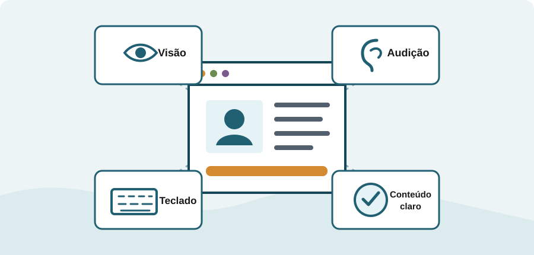

Tecnologia e inclusão
Acessibilidade na Web
Práticas que permitem a pessoas com diferentes habilidades perceber, compreender, navegar e interagir com conteúdos digitais.

O que é acessibilidade na Web?
Acessibilidade na Web significa criar sites, ferramentas e tecnologias que possam ser utilizados por pessoas com deficiência. Isso inclui pessoas com deficiência visual, auditiva, física, de fala, cognitiva ou neurológica.
Quando um conteúdo é bem estruturado, ele pode ser acessado por teclado, interpretado por leitores de tela, ampliado sem perda de informação e compreendido em diferentes contextos. Essas melhorias também ajudam pessoas idosas, usuários de dispositivos móveis e pessoas com limitações temporárias ou situacionais.
“O poder da Web está em sua universalidade. O acesso por todos, independentemente de deficiência, é um aspecto essencial.”
Os quatro princípios da WCAG
A WCAG organiza suas recomendações em quatro princípios. Um conteúdo acessível deve ser perceptível, operável, compreensível e robusto.
Perceptível
A informação deve poder ser percebida de mais de uma forma, com textos alternativos, legendas e contraste suficiente.
Operável
Todas as funções devem funcionar por teclado e oferecer tempo e orientação suficientes para a navegação.
Compreensível
Textos, instruções e comportamentos precisam ser claros, previsíveis e ajudar a evitar erros.
Robusto
O código deve ser compatível com navegadores atuais, futuros e diferentes tecnologias assistivas.
HTML semântico como fundamento
Elementos semânticos descrevem o papel de cada região da página. Em vez de usar apenas elementos genéricos, tags como <header>, <nav>, <main>, <article>, <aside> e <footer> comunicam a estrutura do documento.
Estrutura genérica
<div class="menu">
<div>Início</div>
</div>Estrutura semântica
<nav aria-label="Principal">
<a href="/">Início</a>
</nav>A semântica cria pontos de referência para leitores de tela, melhora a navegação por teclado e torna o código mais fácil de manter. O ARIA deve complementar o HTML somente quando a semântica nativa não for suficiente.
Acessibilidade na prática
Uma página inclusiva nasce de decisões simples aplicadas desde o início do projeto.
| Prática | Como aplicar | Benefício |
|---|---|---|
| Texto alternativo | Descrever imagens informativas no atributo alt. |
Comunica o conteúdo visual a quem usa leitor de tela. |
| Teclado | Manter links e controles alcançáveis com Tab. | Atende quem não utiliza mouse ou tela sensível ao toque. |
| Contraste | Garantir boa diferença entre texto e fundo. | Melhora a leitura em baixa visão e ambientes muito claros. |
| Formulários | Associar cada campo a um <label> descritivo. |
Explica o propósito dos campos a todos os usuários. |
| Multimídia | Oferecer legendas, transcrições e controles visíveis. | Disponibiliza informação sonora por meio de texto. |
Tecnologias assistivas
Tecnologias assistivas ajudam pessoas a interagir com computadores e conteúdos digitais. Elas funcionam melhor quando a página utiliza padrões da Web corretamente.
- Leitores de tela: transformam texto e estrutura em voz ou braille.
- Ampliadores de tela: aumentam conteúdo e ajustam cores para facilitar a leitura.
- Controle por voz: permite navegar e executar comandos por fala.
- Teclados alternativos e acionadores: apoiam pessoas com mobilidade reduzida.
Benefícios para todos
Acessibilidade não é um recurso isolado. Legendas ajudam quem está em um ambiente barulhento, bom contraste melhora o uso sob luz intensa, navegação por teclado aumenta a produtividade e uma estrutura clara favorece mecanismos de busca.
Essencial para alguns, útil para todos: uma Web acessível oferece mais autonomia, alcance e qualidade de uso.